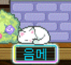

show(), hide(), toggle()

fadeIn(), fadeOut(), fadeToggle()
slideDown(), slideUp()
질문 1: 소프트웨어 개발 주기(SDLC)란?
답변: 소프트웨어를 만드는 과정으로, 계획, 디자인, 개발, 테스트, 배포, 유지보수가 포함됩니다.
질문 2: 버전 관리 시스템은?
답변: 코드의 변경 내역을 추적하고 개발자들이 협업할 수 있는 도구입니다. Git이 대표적인 예입니다.
질문 3: 왜 테스팅이 중요한가?
답변: 소프트웨어의 오류를 발견하고 품질을 보장하기 위해서입니다. 다양한 테스트 단계가 존재합니다.